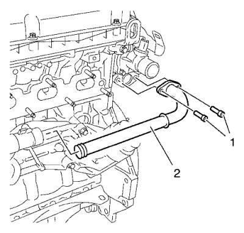

Cruze
Sustitución de la culata
Procedimiento de desmontaje
Desmonte el colector de admisión. Consultar
Sustitución del colector de admisión
.
Retire el colector de escape. Consultar
Sustitución del colector de escape
→
1.6L LXT
→
2.0L Diesel LLW
→
1.6L LDE, LXV y 1.8L 2H0
.
Desmonte el tensor de la correa dentada. Consultar
Sustitución del tensor de la correa de distribución
.

Retire los dos tornillos de la tubería del radiador de aceite del motor (1).
Desmonte la tubería del refrigerador de aceite del motor (2).
Desconecte los 3 tubos flexibles de refrigerante de la brida de refrigerante.
Desmontar la tapa del árbol de levas. Consultar
Sustitución de la tapa de los árboles de levas
Retire los 2 sensores de posición del árbol de levas. Consultar
Sustitución del sensor de posición del árbol de levas
.
Desmonte la válvula solenoide de los actuadores de posición de los 2 árboles de levas. Consultar
Sustitución de válvula magnética de actuador de posición del árbol de levas
.
Desmonte el regulador del actuador de posición de los 2 árboles de levas. Consultar
Desmontaje del regulador del actuador de posición del árbol de levas
.
Extraiga la cubierta trasera de la correa de distribución. Consultar
Desmontaje de la tapa trasera de la correa de distribución
.
Retire la carcasa del termostato. Consultar
Desmontaje de la carcasa del termostato del refrigerante del motor
.
Retire la culata. Consultar
Retirada de la culata
.
Procedimiento de montaje
Monte la culata. Consultar
Montaje de culata.
.
Monte la carcasa del termostato. Consultar
Montaje de la carcasa del termostato del refrigerante del motor
.
Monte la tapa trasera de la correa de distribución. Consultar
Montaje de la tapa trasera de la correa de distribución
.
Monte el regulador del actuador de posición del árbol de levas. Consultar
Montaje del regulador del actuador de posición del árbol de levas
.
Monte la válvula solenoide de los actuadores de posición del árbol de levas. Consultar
Sustitución de válvula magnética de actuador de posición del árbol de levas
.
Monte los 2 sensores de posición del árbol de levas. Consultar
Sustitución del sensor de posición del árbol de levas
.
Monte la tapa del árbol de levas. Consultar
Sustitución de la tapa de los árboles de levas
.
Conecte los 3 tubos flexibles de refrigerante de la brida de refrigerante.
Monte la tubería del refrigerador de aceite del motor (2).
Atención:
Consulte
Precaución con las fijaciones
en la sección Prólogo
Monte los 2 tornillos de la tubería del radiador de aceite del motor (1) y apriételos a
9 N·m (80 lib. pulg.)
.
Monte el tensor de la correa de distribución. Consultar
Sustitución del tensor de la correa de distribución
Monte el colector de escape. Consultar
Sustitución del colector de escape
→
1.6L LXT
→
2.0L Diesel LLW
→
1.6L LDE, LXV y 1.8L 2H0
.
Monte el colector de admisión. Consultar
Sustitución del colector de admisión
.
Llene el sistema de refrigeración. Consultar
Drenaje y llenado del sistema de refrigeración
.
Compruebe y corrija el nivel de aceite del motor.
© Copyright Chevrolet Europe. All rights reserved